直近1週間の人気フィード
はてなブックマーク数を元に新着優先で並べ替え
社内のAIコーディング導入を加速するため前提知識をまとめたガイドラインを書いた 532
532
 Cluster Tech Blog
Cluster Tech Blog
こんにちは、クラスター株式会社でサーバーサイドをメインに開発しているid:shiba_yu36です。クラスター株式会社は2025/07から開発チームのエンジニア希望者にClaude Maxを配り、Claude CodeなどによるAIコーディングをどんどん取り入れる決定をしました。しかしAIコーディングをいきなり行おうとしても、AIやエージェントによるコーディングの前提知識が足りず、使いこなせない・AIコーディングは使えないと判断を下してしまう可能性があります。そこで導入を加速するため、前提となる知識をまとめたAIコーディングガイドラインを書き、Claude Max導入直後に開発チームへ展開することにしました。今回はこのガイドライン内容をそのまま共有しようと思います。AIコーディングの導入の参考になれば嬉しいです。また、間違っている部分もあると思うので識者の方は指摘してもらえると助かります（なんなら指摘たくさんもらえたら改善できて嬉しい）。では早速AIコーディングガイドラインを公開します。なおクラスターではモノレポを使った開発をしているため、その前提のドキュメントとなっています。AIコー
3日前
9,573個ものRFCドキュメントをDifyで全部取り込んでみた話 156 IIJ Engineers Blog
IIJ Engineers Blog
はじめに こんにちは、IIJ九州支社のとみーです。先日、本社の人から 作りたいものあるんですけど。 今手元のRFC全文のテキストファイルがあるんですけど。全部で9573個のファイルです。 これ全部ベク...
2日前
KiroとClaude Codeの組み合わせで開発の質と速度を両取りできた 414 Ubie テックブログのフィード
Ubie テックブログのフィード
Kiroは対話形式で詳細な要件書・設計書を作れるが、実装速度が遅いClaude Codeは爆速開発ができるが、正確な指示出しが難しい2つの長所を組み合わせることで、質と速度の両取りができました。Kiroで作った仕様書をClaude Codeに読み込ませたら、Claude Codeがタスクを理解して最後まで実装してくれました。https://x.com/tonkotsuboy_com/status/1945410412016816322 KiroとはKiroとは2025年7月15日にAmazonがリリースした統合開発環境で、要件定義・設計からコードの開発までを行ってくれま...
3日前

AIによる手動QAの自動化：食べログQAチームの挑戦、その第一歩 138 Tabelog Tech Blog
Tabelog Tech Blog
はじめに こんにちは。食べログの品質管理部で飲食店QCチームのチームリーダーを務める助川です。 みなさんは「AIで手動QA業務の自動化」と聞いて、どんなイメージを持ちますか？ 「現場で本当に使えるの？」「ナレッジや運用が大変そう…」そんな声も聞こえてきそうです。 私たちも同じような課題を抱えていました。本記事では、食べログのQA現場でAIによる手動QAの自動化に挑戦している取り組みの途中経過と、その中で得た学び・工夫・今後の展望をお伝えします。 品質管理部のAI活用の目標 品質管理部では、食べログの重要プロジェクトである予約や食べログノート、インバウンドなどの案件のQAを担当しています。 食べ…
3日前
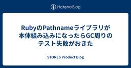
RubyのPathnameライブラリが本体組み込みになったらGC周りのテスト失敗がおきた 108 STORES Product Blog
STORES Product Blog
こんにちは。ruby-devチームの遠藤（@mametter）です。 次期バージョンのRubyでは、pathnameがRuby本体組み込みとなり、require "pathname"なしで利用可能になる予定です。 Rubyで書き捨てスクリプトを書いてる自分のような人は地味にうれしいかもしれません。 Feature #17473: Make Pathname to embedded class of Ruby - Ruby - Ruby Issue Tracking System さて、pathnameの組み込みがマージされた直後、非常に興味深いバグが発生しました。 今回はそのデバッグの経緯を技…
3日前

AWS 無料利用枠の概念が大きく変わりました 195 サーバーワークスエンジニアブログ
サーバーワークスエンジニアブログ
2025年7月15日に AWS Free Tier のアップグレードが行われ AWS 無料利用枠の概念が大きく変わりました。これまでと何が違うのか、新たに用意された AWS API がどのようなものなのかを確認した記事となります。
4日前
Claude Code秘書で実現するマルチプロジェクト業務整理: 1ヶ月使い倒して得た運用ノウハウと成果 47
 TechRacho
TechRacho
morimorihoge です。生成AIやAI Agentの利用、今年初頭はまだまだ一部の人達が試していたくらいの感じだったのに、今や使いこなして当たり前な時代になりました。 個人的にはGitHubが現れて開発フローがPRベースになり、コードレビューが当たり前のものになったときと同じくらいのインパクトを感じています。 今回はここ1ヶ月間、Claude Codeを自分専用の秘書として運用してきた経験をもとに、AI活用の新しい形を紹介します。特に、エンジニアや技術系の中間管理職の方々にとって、日々の業務効率化のヒントになれば幸いです。 Claude Codeとは？ 言わずと知れたAnthropicのAIエージェントで […]The post Claude Code秘書で実現するマルチプロジェクト業務整理: 1ヶ月使い倒して得た運用ノウハウと成果 first appeared on TechRacho.
2日前
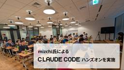
mizchi氏による Claude Code ハンズオンを開催 62 Blog on DeNA Engineering
Blog on DeNA Engineering
こんにちは、岡崎晃平です。先日DeNAラウンジにて、AI駆動開発の第一人者として知られる mizchi 氏を講師に迎えた Claude Code ハンズオンセッションを開催しました。17:30～20:00の2時間半にわたって実施され、参加者は200人を超え、Claude Code 経験者と未経験者が混在する勉強会となりました。今回はその内容についてレポートしたいと思います。 勉強会概要 講師の mizchi 氏は、著名な記事「 CLINEに全部賭けろ 」でAI駆動
3日前
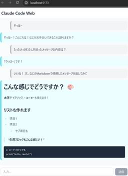
Claude Code SDKでClaude Code Webを作ってみる 28 エムスリーテックブログ
エムスリーテックブログ
エンジニアリンググループ ゼネラルマネージャーの横本(@yokomotod)です。 このブログはSREチームブログリレー4日目の記事です。 昨日は山本さんによるSRE作業もGemini CLIで効率化する記事でした。 www.m3tech.blog 続けて今日もAIコーディング関連、Claude CodeのSDKが気になって触ってみた知見を紹介します。 言わずもがなClaude Codeは強力なツールで、最近はHooksなども登場し、拡張性もどんどん強化されています。 しかし、まだまだもっと自由に機能強化して「オレの最強のClaude Code」を作ってみたいですよね。 というわけで、Clau…
2日前

Pythonで始めるリランカー実装：mixedbread-ai、Alibaba-NLP、OpenAI GPTを比べてみた 27 RAKUS Developers Blog | ラクス エンジニアブログ
RAKUS Developers Blog | ラクス エンジニアブログ
mixedbread-ai/ Alibaba-NLP / OpenAI GPTによるリランキング【実装サンプル付き】 はじめに RAGをはじめとする現代の情報検索システムでは、「リランカー（Reranker）」と呼ばれる仕組みが使われることがあります。 検索候補を単にキーワードマッチやベクトル検索でピックアップするだけでなく、さらに高精度なモデル(＝リランカー)で再スコアリング（再ランキング）することで、ユーザーが本当に求めている情報を上位に表示できます。 本記事では、筆者が実際に業務中の検証作業で利用した次の3つのモデル: mixedbread-ai/mxbai-rerank-v2 Alib…
1日前
PacketProxyで探るGemini CLIのコンテキストエンジニアリング 〜AIエージェントを信頼できる相棒に〜 23 Blog on DeNA Engineering
「なんかよく分からないけど、すごい」で終わらせないために こんにちは、DeNA セキュリティ技術グループの 黒岩 亮 ( @kakira9618 ) です。 AIエージェント、とくに Gemini CLI のようなコーディングを支援してくれるツールは非常に強力で、私たちの開発体験を大きく変えようとしています。しかし、その一方で、こんな風に感じたことはありませんか？ 「このファイルの情報、勝手にAIに送られたりしない？ 大丈夫かな？」 と、情報管理・セキュリティ
2日前

アンドパッドSRE/CREメンバーによるSRE NEXT 2025のおすすめセッション 20 ANDPAD Tech Blog
ANDPAD Tech Blog
こんにちは。SREチームの吉澤です。最近、SRE NEXTドリブンでSREとSWEでタッグを組んでインフラコスト削減した話を書きました。まだの方はぜひ読んでみてください。 アンドパッドは、7/11(金)〜12(土)開催のSRE NEXT 2025にCOFFEEスポンサーとして協賛しました！ 今回はアンドパッドブースの様子と、現地参加したメンバーによるおすすめセッションをご紹介します。アーカイブ動画もこれから公開されると思いますので、これからSRE NEXT 2025の内容を追う方は、ぜひ参考にしてみてください。 アンドパッドブースの様子 SRE/CREメンバーがおすすめするセッション SREチ…
2日前
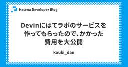
Devinにはてラボのサービスを作ってもらったので、かかった費用を大公開 148 Hatena Developer Blog
Hatena Developer Blog
こんにちは、id:kouki_dan です。先日、はてラボに1つサービスをリリースしました。 labo.hatenastaff.com これを作り始めたとき、ちょうど社内では検証用にDevinが使えるようになっていました。検証の用途はエンジニアに任されていたので、ゼロからプロダクトを作る検証として、これを全部Devinで作ったら面白いんじゃないかな？と思いつきました。そして、人間コミット禁止縛りで作り始めて、リリースまで、人間が１コミットもすることなく完成させることができました。トップコントリビューターはもちろんDevin。グラフに人がいるのは、マージコミットがカウントされているからだと思いま…
4日前
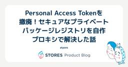
Personal Access Tokenを撤廃！セキュアなプライベートパッケージレジストリを自作プロキシで解決した話 17 STORES Product Blog
こんにちは、STORES 技術推進本部のid:atponsです。普段はSTORESの技術的な課題の解決や改善、パブリッククラウドの運用などを担当しています。 今回は、開発者体験を損なっていたプライベートパッケージレジストリのトークンの運用を見直し、セキュアで簡単な認証の仕組みをリバースプロキシの自作で実現した話を紹介します。
2日前
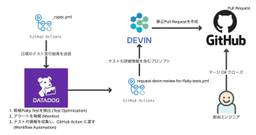
さよなら Flaky Test！Devinと共に実現する、CI安定化への道 54 Timee Product Team Blog
Timee Product Team Blog
タイミーでは、Flaky Test がデプロイの妨げになることで開発効率が悪化していました この問題を解決するため、AI エージェント「Devin」を活用し、Flaky Test の検出から修正プルリクエストの作成までを完全に自動化しました 結果、CIは安定し、開発者は本来の業務に集中できるようになったことで、開発体験が向上しました こんにちは！タイミーでバックエンドエンジニアとして働いている 福井 (bary822) です。 皆さんは Flaky Test に悩まされた経験はないでしょうか? タイミーでも、Flaky Test によって CI の信頼性が低下し、開発者の貴重な時間を奪ってしま…
4日前
GitHub Self-hostedに移行しました。CIが最大55%速くなり、月額が300万円節約できた！ 182 SODA Engineering Blogのフィード
こんにちは、SODAのSREチームのDucと申します。GitHub Actionsのコストを削減しながらCIワークフローを高速化したの工夫をご紹介します。 背景私たちのチームは、snkrdunk.comサイトとSNKRDUNKモバイルアプリの可用性とパフォーマンスの維持に注力しています。それに加えて、クラウドインフラストラクチャやその他の監視・開発ツールのコスト管理も担当しています。毎月、AWSやGitHubなどのインフラストラクチャとツールの請求書をチェックしています。GitHubの請求額が非常に高いことに気づきました。特にGitHub Actionsの部分です。参考ま...
5日前
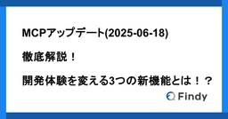
MCPアップデート(2025-06-18)徹底解説！開発体験を変える3つの新機能とは！？ 23 Findy Tech Blog
Findy Tech Blog
こんにちは。 ファインディ株式会社 で Tech Lead をやらせてもらってる戸田です。 現在のソフトウェア開発の世界は、生成AIの登場により大きな転換点を迎えています。 GitHub CopilotやClaude Codeなど生成AIを活用した開発支援ツールが次々と登場し、開発者の日常的なワークフローに組み込まれつつあります。 そのような状況の中で、MCP(Model Context Protocol)の新バージョンが公開され、いくつかの機能が追加されました。 modelcontextprotocol.io そこで今回は、その中でも特に注目すべき3つの機能について紹介したいと思います。 そ…
3日前
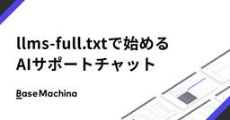
llms-full.txtで始めるAIサポートチャット 17 ベースマキナ エンジニアブログ
ベースマキナ エンジニアブログ
こんにちは！syumaiです。 今回は、ベースマキナ ドキュメントへの llms-full.txt の追加（リリースノート）に合わせて、その活用方法についてお伝えさせていただければと思います。 なお、今回ベースマキナに llms-full.txt を追加した主な目的は、お客さまご自身で、NotebookLMなどを使ったAIサポートチャット環境をご利用いただけるようにすることです。詳細については後ほど説明させていただきます。 llms.txt とは？ llms-full.txt の話をする前に、 llms.txt の話をする必要があります。（深くは踏み込みません） 重要なのは、これらがいずれもL…
3日前
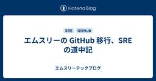
エムスリーの GitHub 移行、SRE の道中記 6 エムスリーテックブログ
こんにちは。エムスリーで SRE エンジニアをしている伴です。 このブログは SRE チームブログリレー 5日目の記事です。 M3 Tech Blog でも AI を開発に活用した記事が多く出ていますが、弊社では開発への AI 活用が積極的に進められています。 その流れで、GitHub が構築している AI のエコシステムを積極的に活用するため、昨年末からセルフホスティング版の GitLab Server から GitHub Enterprise Cloud への移行を進めています。 SRE チームは、GitLab の運用経験を活かし、GitHub への移行支援と運用サポートを担っています。 …
14時間前
展示会ってどうやるの？ 〜チームで展示会に出てみた話〜 16 Insight Edge Tech Blog
Insight Edge Tech Blog
はじめに なぜ展示会に出たのか 準備1：どこにだすか？誰とだすか？ 準備2:デモ・営業資料・リーフレット...終わらない制作物 会場設営、そして当日 終わりに：展示会はチームでつくるもの はじめに こんにちは、Insight Edgeイノベーションハブで事業開発を担当している那須田です。 2025年5月に、大阪で開催された「コンタクトセンター/CRMデモ＆カンファレンス」（通称CCCRM展）という展示会に参加してきました。半期ごとに行われているイベントで、コンタクトセンター関係者が多く来場し、先端技術を活用したツールやソリューションの展示が行われています。昨年から参加し始めた当社としては3回目…
3日前
自動テストのガイドライン策定によるテスト改善への取り組み 30 Cybozu Inside Out | サイボウズエンジニアのブログ
Cybozu Inside Out | サイボウズエンジニアのブログ
この記事は、CYBOZU SUMMER BLOG FES '25の記事です。 目次 はじめに kintoneの自動テストが抱える課題 チーム内でのテスト改善への取り組み テストピラミッドによるテスト戦略の策定 ガイドラインに基づくテスト設計と実装 ガイドライン策定後の変化 今後の課題 終わりに はじめに こんにちは、kintone開発の堀越です。システム管理画面や外部連携の機能開発を担当しています。 kintone開発チームでは担当する機能毎にサブチームを作り、それぞれ独自で新規機能開発や改善活動を行っています。 この記事では、私たちのサブチームで取り組んだテストガイドライン作成と、実際の改善…
4日前
人間を「過去の整理」から解放し「未来の創造」へ導くAI-PMO 28 Tabelog Tech Blog
はじめに こんにちは、元吉です。AIトランスフォーメーション推進部（通称 AX部）で「プロダクト業務へのAI浸透、全社員のAI活用レベル向上」というミッションに取り組んでいます。 プロジェクトの進捗報告や課題の特定に追われ、本来注力すべき課題解決の時間が奪われていませんか？本稿では、この問題を解決するため、私たちが取り組む『AI-PMO』というコンセプトをご紹介します。 日々のチャットや議事録といった膨大な『アクティビティログ』からAIがプロジェクトの現状を正確に読み解き、次の一手を提示する。これにより、人間は進捗確認といった『過去を振り返る作業』から解放され、『未来に向かって何をするか』とい…
3日前
Amazon Bedrock AgentCoreを一通りさわり倒してみる ~ 全体の感想とRuntime編 ~ 5 Generative Agents Tech Blog
Generative Agents Tech Blog
ジェネラティブエージェンツの遠藤です。 7月にジョインしたばかりなので初めましての方が多いと思いますが、今後ともよろしくお願いします！ 発表されたばかりのAmazon Bedrock AgentCore (Preview)のドキュメントを一通り読んだところ、「これ欲しかったやつ！！」ってなってテンションが爆上がりしています。 勢いに任せて全部触ってまとめようと思ったのですが思ったより量が多いので、まずは全体の感想とAgentCore RuntimeでLangChainを動かしてみた所をまとめてみました。 aws.amazon.com ざっくりの感想として「遂にエージェントのためにAWSが本気で…
5時間前
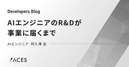
AIエンジニアのR&Dが事業に届くまで 55 ACES エンジニアブログ
ACES エンジニアブログ
1. はじめに 2. ACESのR&D部門とAIエンジニア 2.1 組織図上の立ち位置 2.2 何を作っているか 3. 顧客に価値を届けるまでの3つの壁 4. 【作る】R&Dとソフトウェアの接続 4.1 V字開発プロセスの導入 4.2 PoCと本開発のフェーズ分離 4.3 アジャイルによる加速 5. 【価値を届ける】事業部との連携 5.1 要求の受入口を絞る 5.2 事業部の中に入る 5.3 優先順位を付ける 6. 【改善・拡張】アーキテクチャ戦略 6.1 アーキテクチャの可視化と共有 6.2 グレーな部分を残す 7. 今後の課題 - 大LLM時代への適応 8. むすびに 1. はじめに 初め…
5日前
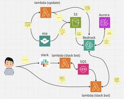
Amazon BedrockでesaからKnowledge Baseを構築し、Slackから問い合わせるようにしてみたらどうだった？ 50 Repro Tech Blog
Repro Tech Blog
社内ドキュメントの内容をAIに食べさせたいじゃないですか こんにちは。Feature2 Unitのうなすけです。一番よく使っているAIサービスはClaudeです。 Reproでは社内ドキュメントにesaを使用しています。他にも、Kibela、DocBase、Notion、Confluenceなど、様々な社内ドキュメント用サービスがありますよね。その中でもNotionにはNotion AIが、ConfluenceにはAtlassian Intelligenceがあり、AIと連携した便利な機能がある……と聞いています。僕はどちらも使ったことはありませんが。 僕の周りでは特にNotion AIを使っ…
4日前
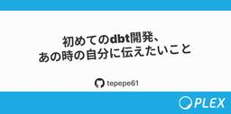
初めてのdbt開発、あの時の自分に伝えたいこと 43 PLEX Product Team Blog
PLEX Product Team Blog
はじめに 株式会社PLEXでコーポレートエンジニアをしている石川です！ 社内で使われている業務用システムの開発など、社内業務の改善に取り組んでいます。 この記事では、初めてdbtの開発を任された私が、どのようにアプローチしたか・つまずいたか・改善したかについて共有します。 対象読者 以下の項目に関心・該当する方におすすめの記事です！ 自社でdbtを導入予定で、dbt開発を任されたが何をすべきかわからない方 背景 社内業務の一貫として、社内のさまざまなデータソースに存在する企業情報を元に、BigQueryに企業テーブルを作成する必要性が生じました。 BIツール越しにSQLを書くことも考えましたが…
4日前
個人を活かしてチーム力も最大化する、属人性解消への取り組み方 41 エムスリーテックブログ
こんにちは。SREチームのチームリーダーをしている後藤です。 このブログはSREチームブログリレーの2日目の記事になります。 私がSREチームのチームリーダーに就任してからもうすぐ3年になります。 その間に様々な課題に取り組んできたのですが、中でもチームの属人性について考える機会は多くありました。 本記事ではSREチームが属人性の解消に向けてどう向き合ってきたか振り返りまとめていきたいと思います。 属人性についてディスカッションする動物たち generated by Gemini
5日前
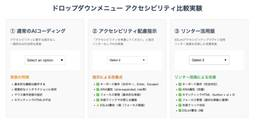
ドロップダウンメニューに対するアクセシビリティリンターを用いたAIコーディング比較 17 弁護士ドットコム株式会社 Creators’ blog
弁護士ドットコム株式会社 Creators’ blog
こんにちは、弁護士ドットコムでクラウドサインというサービスのフロントエンドを実装している林 @rinyu_tech です。 最近は、AI コーディングで UI コンポーネントを生成させることも増えてきました。しかし、AI はアクセシビリティに配慮しないコードを生成することもあります。今回は、AI にアクセシブルなコードを生成させることが可能なのか、実験してみました。 実験概要 目的 検証対象 実験結果のまとめ 実験環境 プロジェクトの構成 設定したアクセシビリティのルール インタラクティブ要素（ドロップダウンに必須） ARIA・セマンティックHTML（スクリーンリーダー対応） フォーカス管理（…
4日前
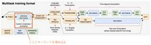
Whisperによる映像文字起こしの精度をLLMとOCRの力で向上させる 61 NTT docomo Business Engineers' Blog
NTT docomo Business Engineers' Blog
イノベーションセンターの加藤です。この記事ではWhisperによる音声認識の前処理と後処理にLLMとOCRを組み込むことで、映像の文字起こし精度の向上を図った際の検証結果を紹介します。 Whisperとは OCRの結果を盛り込み専門用語を認識させる 大規模言語モデルで全体の文章を調整する 各アプローチの融合 結果の考察 まとめ Whisperとは Whisper1はOpenAIによって提供されているオープンソースの音声認識モデルです。 色々なサイズのモデルが提供されており、最も大きいモデルであるlarge-v3は日本語を含む多言語に対応し高い認識精度を誇ります。 しかしもちろん完璧ではなく、W…
6日前
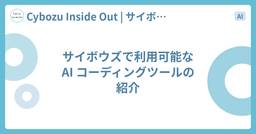
サイボウズで利用可能な AI コーディングツールの紹介 8 Cybozu Inside Out | サイボウズエンジニアのブログ
AI ツール導入を担当している AI やっていきチームの @naotama です。今回は、サイボウズで利用できる AI コーディングツールをご紹介します。 はじめに サイボウズでは、社員からの要望や AI やっていきチーム主導で、セキュリティポリシー・データ保持ポリシーを確認したうえで複数の AI コーディングツールを導入・運用しています。 利用可能なツール GitHub Copilot Business 利用開始: 2023/05 URL: GitHub Copilot Business AI コーディングツールの先駆けとして導入されました。 kintone アプリを利用した申請フローでサク…
2日前
開発生産性Conference 2025 参加レポート 34 ZOZO TECH BLOG
ZOZO TECH BLOG
はじめに こんにちは、ZOZOMO部FBZブロックの杉田です。2025年7月3日・4日の2日間、JPタワーホール＆カンファレンスにて「開発生産性Conference 2025」が開催されました。本記事では、会場や各ブースの様子に加え、特に印象に残ったセッションについてご紹介します。 開発生産性Conference 2025とは 本カンファレンスは、生成AIとの協働が不可欠な時代に、いかに開発生産性に取り組み事業価値を高めていくかをテーマに開催されました。3回目を迎える今年は、来場者数が3000人を超える盛況ぶりで、開発生産性への関心の高さがうかがえます。 会場の様子 会場は東京駅直結のJPタワ…
5日前
さくらのAppRunにNode.js+SQLiteアプリを簡単デプロイできるGitHub Actionを作った 13 Aidemy Tech Blogのフィード
はじめにさくらのクラウドに新しく登場した「AppRun」は、コンテナアプリケーションを簡単にデプロイできるマネージドサービスです。しかし、デプロイの手順が少し煩雑で、Dockerfileの作成やレジストリへのプッシュなど、いくつかの手順を踏む必要があります。また、コンテナ環境では通常、SQLiteのようなファイルベースのデータベースは永続化が難しいという課題があります。コンテナが再起動するたびにデータが失われてしまうからです。そこで、Node.jsアプリケーションをGitHub Actionsから簡単にAppRunへデプロイできる上に、SQLiteデータベースの永続化も自動で行...
3日前
【Kiro】はじめる前に知っておくべきこと ~データプライバシー＆セキュリティ編~ 29 サーバーワークスエンジニアブログ
KiroのAI開発環境を安全に使うためのデータプライバシーとセキュリティ対策を解説。AWS責任共有モデルや暗号化、サービス改善のためのデータ利用について詳述。
4日前
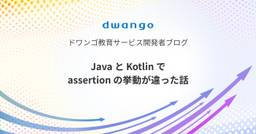
Java と Kotlin で assertion の挙動が違った話 28 ドワンゴ教育サービス開発者ブログ
ドワンゴ教育サービス開発者ブログ
Java と Kotlin の asserti の仕様差異に気づかず、パフォーマンス問題が起きてしまった話です
5日前
さくらのIaaS基盤を支えるしくみと課題 6 さくらのナレッジ
さくらのナレッジ
この記事は2025年7月5日(土)に行われたオープンソースカンファレンス 2025 Hokkaidoにおける発表をさくナレ編集部で記事化したものです。 はじめに さくらインターネットの廣瀬です。 今日は「さくらのクラウド […]
3日前
【ミラティブ】CEDEC2025 にスポンサーとして登壇 & 協賛します 9 Mirrativ Tech Blog
Mirrativ Tech Blog
こんにちは、ミラティブの広報の新嘉喜です。 ミラティブは、2025年8月22日（火）〜24日（木）に開催される「CEDEC 2025」に、スポンサーとしてセッション登壇と協賛をすることを決定いたしました。 ※CEDEC2025については、公式サイトをご覧ください https://cedec.cesa.or.jp/2025/ セッションの内容は、以下の通りです。 ミラティブ登壇者によるセッション 登壇者 井本 大登（技術戦略本部 技術部 Unityグループ マネージャー）@adarapata タイトル ライブゲームという新しい遊びの作り方 〜スラポンコロシアム開発事例から学ぶ配信者・視聴者一体型…
4日前
Amazon Bedrock のプロンプトキャッシュはコスト／レイテンシーにどのような効果があるか？ 19 Taste of Tech Topics
Taste of Tech Topics
はじめに こんにちは、丸山です。LLMやナレッジベースの利用ができるサービス「Amazon Bedrock」の新機能として、2025/04/07に「プロンプトキャッシュ」が一般公開されました。 aws.amazon.com aws.amazon.com この機能により、LLM利用時のコスト削減とレイテンシー改善ができます。 今回は、プロンプトキャッシュを使用することで実際どの程度コスト削減やレイテンシー改善ができるのか試してみました。 はじめに プロンプトキャッシュのメリット プロンプトキャッシュの仕組み ざっと知りたい人向けの説明 詳しく知りたい人向けの説明 どのようなときに使うとよいか プ…
5日前
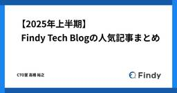
【2025年上半期】Findy Tech Blogの人気記事まとめ 16 Findy Tech Blog
こんにちは。Developer Productivity Engineer（DPE）兼 Findy Tech Blog編集長の高橋（@Taka-bow）です。 おかげさまで、Findy Tech Blogは2年目に突入しました。 この1年で、私たちのブログは多くのエンジニアやIT業界関係者の皆さんにご愛読いただき、記事の内容もますます多様化・充実してきたと感じています。 日々の開発現場で役立つノウハウや、最新技術のトレンド、エンジニアの日常など、さまざまなテーマを取り上げてきました。 「現場で本当に使える知見がほしい」「他社のエンジニアはどんな工夫をしているのか知りたい」「自分の成長のヒントを…
5日前
LLMのEmbeddingを活用したアイテム推薦の可能性 23 Insight Edge Tech Blog
こんにちは。データサイエンティストの白井です。 今日は、LLMのEmbeddingをアイテム推薦に活用すると、どんな推薦が可能になるかを紹介したいと思います。 はじめに アイテム推薦とは アイテム推薦の種類 行動履歴ベース推薦 コンテンツベース推薦 LLMのEmbeddingはコンテンツベースの強い味方になる 利用データについて MovieLens TMDb 行動履歴ベース推薦の実践 実施内容 推薦結果 分かること 1. 「ハリーポッターと賢者の石」の結果が、シリーズが並んでいる。 2. 「もののけ姫」や「君の名は」の結果が、同じ制作会社や監督が並んでいる。 3. 全体的に、推薦対象映画の上映…
6日前
複数リポジトリをモノレポっぽくシンボリックリンクでまとめて Claude Code で開発しやすくする 3 アルダグラム Tech Blogのフィード
こんにちは。アルダグラムでエンジニアしている前山です。最近だと新規プロダクトを作る際、モノレポ構成にしてコンテキストを集約させた方が Claude Code で開発しやすいかなと感じています。ただ既存プロダクトで複数のリポジトリが分かれているケースが大いにあると思います。また、ghq のルートディレクトリで Claude Code を実行すると、タスクや開発に関係ないリポジトリまで子ディレクトリに含まれる状態になることもあるかなと思います。本記事では、ghq で管理しているリポジトリをシンボリックリンクで1つのワークスペースに集約し、Claude Code がタスクに必要なリポジト...
3日前
日本語タスクでMany-Shot In-Context Learningを検証する 20 朝日新聞社 メディア研究開発センター
朝日新聞社 メディア研究開発センター
こんにちは。メディア研究開発センター（M研）の田口です。テックブログ執筆の順番が回ってきました。前回自分が書いたのは以下の記事です。続きをみる
6日前
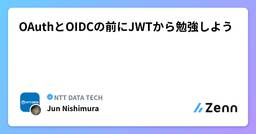
OAuthとOIDCの前にJWTから勉強しよう 5 NTT DATA TECHのフィード
はじめに認証や認可の実現方法は、システム開発における頻出の関心事の一つかと思います。そんな中、JSON Web Token（JWT）／OAuth2.0／Open ID Connect（OIDC）という言葉もよく耳にするところです。しかし、「JWTって結局どう使うの？」「OAuth2.0やOIDCってJWTとどう関係するの？」「OAuth2.0とOIDCの違いって何？」という疑問を持つ方も多いのではないでしょうか。また、JWTに「署名」や「検証」といったキーワードが絡んでくると、途端にハードルが上がったように感じるものです。これらのキーワードについては既に沢山の記事が公開されて...
3日前
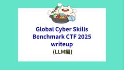
Global Cyber Skills Benchmark CTF 2025 writeup (LLM編) 4
 ラック・セキュリティごった煮ブログ
ラック・セキュリティごった煮ブログ
こんにちは！ ラックのAI技術部でAI x セキュリティ領域のリサーチを行っている豊田です。 先日開催された「Global Cyber Skills Benchmark CTF 2025」では、AIジャンルの問題として、LLMを用いたシステムに対するプロンプトインジェクション攻撃が出題されました。本記事では、AI分野の研究開発に携わる視点から、この問題の解法に加え、問題のシナリオ分析や別解についても詳しく解説します。 Global Cyber Skills Benchmark CTF 2025: Operation Blackoutの大会概要についてはこちらの記事をご覧ください。ラックは国内2…
4日前
終生顧客購買行動予測模型 3 GMO Developers
GMO Developers
はじめに こんにちは。GMOインターネット 嘉山です。 新卒1年目で参画したデータ分析系プロジェクトにて、「Buy Till You Die（BTYD）モデル」を調査する機会があり、今回はそこで学んだ知見を紹介させていた […]
4日前

CloudFront SaaS Managerでマルチテナントを管理する 3 Technology - NRIネットコムBlog
Technology - NRIネットコムBlog
本記事は AWSアワード受賞者祭り 3日目の記事です。 ✨🏆 2日目② ▶▶ 本記事 ▶▶ 4日目 🏆✨ こんにちは。梅原です。 この度、2025 Japan All AWS Certifications Engineersに選出いただきました。 今年に入ってから駆け込みで5個取得した甲斐がありました。 さて、本ブログはネットコムの全AWS受賞者によるAWSアワード受賞者祭り3日目の記事です。 タイトルにもある通り、最近発表されたAmazon CloudFront SaaS Managerの機能について紹介します。 aws.amazon.com Amazon CloudFront SaaS M…
4日前
GitHub Advanced Securityの導入と運用 10 ZOZO TECH BLOG
はじめに こんにちは、情報セキュリティ部の兵藤です。日々ZOZOの安全を守るためSOC業務に取り組んでいます。 ZOZOではGitHub Advanced Securityを導入、運用しております。本記事では、GitHub Advanced Securityに関する取り組みについて紹介します。 また、情報セキュリティ部ではその他にもZOZOを守るための取り組みを行っています。詳細については以下の「OpenCTIをSentinelに食わせてみた」をご覧ください。 techblog.zozo.com 目次 はじめに 目次 GitHub Advanced Securityとは GitHub Adva…
6日前
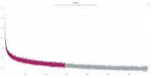
日本語×ソフトウェア開発に強いLLMの開発に取り組んだ挑戦者の備忘録 (前編) 7 フューチャー技術ブログ
フューチャー技術ブログ
<p><a href="/articles/20250707a/">AI Tips連載</a>の4本目の記事となります。</p><h1 id="はじめに"><a href="#はじめに" class="headerlink"
5日前
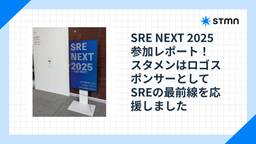
SRE NEXT 2025 参加レポート！スタメンはロゴスポンサーとしてSREの最前線を応援しました 4 stmn tech blog
stmn tech blog
こんにちは！株式会社スタメン、プラットフォーム部のもりしたです。 先日、7月11日（金）から12日（土）にかけて東京のTOC有明で開催された「SRE NEXT 2025」にオフラインで参加してきました！SRE NEXTへの参加は今回が初めてでしたが、非常に学びが多く、充実した2日間を過ごすことができました。 sre-next.dev 参加メンバー集合写真（もりしたは写真撮影係してます） なぜSRE NEXTに参加したのか？ 私はSRE業務をミッションの一つとするプラットフォーム部に所属しています。日々の業務の中で「SREとして、これから何に取り組むべきか？」という問いに対し、具体的なヒントを得…
4日前
Developer eXperience AWARD 2025で5位を受賞しました 3 LayerX エンジニアブログ
LayerX エンジニアブログ
本日、一般社団法人日本CTO協会が主催する「Developer eXperience AWARD 2025」の結果が発表され、LayerXが5位にランクインしました。 これまでの2022年（15位）、2023年（15位）、2024年（11位）から着実に順位を向上させ、6つ順位を伸ばし5位となりました。 この受賞は、LayerXの開発組織全体が取り組んできた、お客さまへのさらなる価値提供を目的とする多角的なEnablingの取り組みや、技術コミュニティへの継続的な貢献が評価されたものと考えています。 行動指針に紐づくアクション LayerXは「すべての経済活動を、デジタル化する。」というミッショ…
4日前
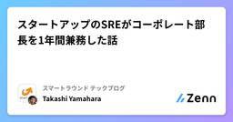
スタートアップのSREがコーポレート部長を1年間兼務した話 4 スマートラウンド テックブログのフィード
コーポレート部長を1年間兼務していましたこんにちは、スマートラウンド執行役員VP of Reliabilityの@shonansurvivorsです。SREのほか、情シス[1]やセキュリティの領域を担当しています。実は2024年7月から2025年5月末までの1年弱、上記の役割に加え、コーポレート部長を兼務していました(現在は6月に入社したCFOに引継ぎ済み)。当社のコーポレート部は総務/労務/経理/法務/人事といった機能を担っています。私がコーポレート部長として行なった仕事はメンバーのピープルマネジメントや他の役員・部署との調整などが中心でしたが、事情(詳細後述)により任期終盤...
6日前